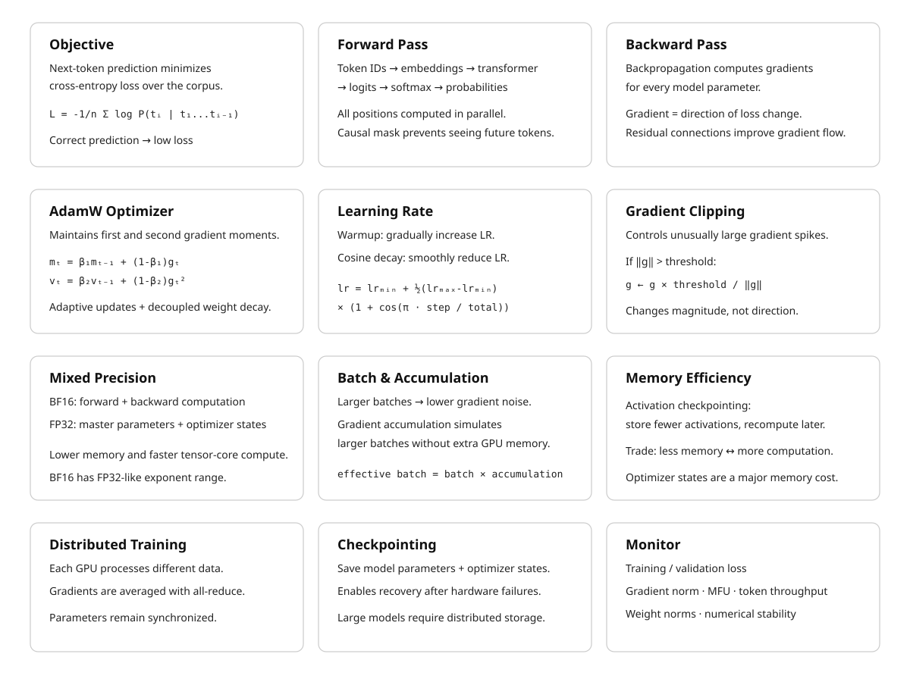

24 The Training Loop
The canonical question for this chapter: Given a transformer architecture and a corpus of text, how does the model actually learn, what happens in a single training step, and how do millions of steps produce a capable model?
24.1 What learning means for a language model
Before the first training step, the model’s parameters are random. Every weight in every attention matrix, every FFN weight, every embedding, initialized from a small random distribution. The model produces nonsense. Given “The capital of France is”, it assigns roughly equal probability to every token in the vocabulary.
After training, those same parameters encode enough structure about language and the world that the model assigns high probability to “Paris” in that context. Learning is the process of adjusting parameters until they do this, not just for one example, but for trillions of them, simultaneously and without memorizing any individual one.
The training loop is the mechanism that does this adjustment. Show the model text, measure how wrong it is, compute how to be less wrong, update the parameters. Repeat hundreds of millions of times. The devil is entirely in the details.
24.2 The objective: cross-entropy loss
The training objective for a language model is next-token prediction, formalized as minimizing cross-entropy loss.
For a sequence of tokens [t_1, t_2, …, t_n], the model predicts each token given all previous tokens. The loss for a single sequence is:
\[ L = -1/n * sum_i log P(t_i | t_1, ..., t_{i-1}) \]
Where \(P(t_i | t_1, ..., t_{i-1})\) is the probability the model assigns to the correct next token at position i.
If the model assigns probability 1.0 to the correct token: log(1.0) = 0, no loss. If it assigns probability 0.01: log(0.01) ≈ -4.6, high loss. The objective is to maximize the probability assigned to correct tokens across all positions in the training corpus.
This objective is applied to every position in every sequence simultaneously. For a sequence of 4,096 tokens, the model makes 4,096 predictions in a single forward pass. The causal mask enforces that position i only attends to positions 0 through i-1, the model cannot cheat by looking at what it is trying to predict. This is why training is computationally efficient: one forward pass on a sequence of length n produces n training signal examples simultaneously.
24.3 The forward pass
The forward pass is the computation from input tokens to output probabilities.
Input: [t_1, t_2, t_3, ..., t_n] <- token IDs
Output: [P_1, P_2, P_3, ..., P_n] <- probability distributions over vocabFor each position i, P_i is the model’s probability distribution over the vocabulary for what token comes next. The actual next token t_{i+1} is the label. The loss is computed by comparing P_i to a one-hot distribution over the correct token.
During the forward pass, the model:
- Looks up token embeddings for all input tokens
- Adds positional encodings (or applies RoPE inside attention)
- Passes through all transformer blocks sequentially
- Projects the final hidden states to vocabulary logits via the output embedding matrix (weight-tied with the input embedding table)
- Computes softmax to get probabilities
- Computes cross-entropy loss against the shifted target sequence
The forward pass is fully parallelized across the sequence dimension, all positions are computed simultaneously, with the causal mask enforcing the autoregressive constraint. This is the architectural property that made transformers faster to train than recurrent networks.
24.4 The backward pass: backpropagation
After the forward pass produces a loss value, the backward pass computes the gradient of that loss with respect to every parameter in the model.
The gradient tells you: if I increase this parameter by a tiny amount, does the loss go up or down, and by how much? A negative gradient means increasing the parameter reduces loss, move it up. A positive gradient means increasing the parameter increases loss, move it down.
Backpropagation applies the chain rule of calculus recursively from the output layer back to the input embeddings. For a model with 175 billion parameters, this computation visits every parameter and produces a gradient for each one.
The backward pass is approximately 2x as expensive as the forward pass in compute. It also requires storing the activations computed during the forward pass, intermediate values that are needed to compute gradients during the backward pass. For a large model with a large batch, storing all activations requires significant GPU memory. This is one of the central constraints of training large models and the motivation for activation checkpointing.
24.4.1 Gradient flow through the residual stream
One key insight about why transformers train well at depth: residual connections provide a direct gradient highway from the loss back to the early layers.
Without residuals, the gradient must pass through every nonlinearity in every layer before reaching layer 1. Deep chains of multiplications cause gradients to either vanish or explode.
With residuals:
x_L = x_0 + F_1(x_0) + F_2(x_1) + ... + F_L(x_{L-1})
dL/dx_0 = dL/dx_L * (1 + sum of partial derivatives through each sublayer)The identity path (the “1” in the derivative) ensures gradients reach early layers reliably, even in 96-layer or 126-layer networks. This is why very deep transformers are trainable while very deep plain networks of the same depth are not.
24.5 The optimizer
Once gradients are computed, parameters are updated to reduce the loss. Vanilla gradient descent moves each parameter in the direction of the negative gradient, which is conceptually correct but practically unusable for large model training.
24.5.1 Adam: adaptive moment estimation
Adam maintains two running statistics per parameter:
\[ \begin{aligned} m_t &= \beta_1 m_{t-1} + (1 - \beta_1) g_t \\ v_t &= \beta_2 v_{t-1} + (1 - \beta_2) g_t^2 \\ \hat{m}_t &= \frac{m_t}{1 - \beta_1^t} \\ \hat{v}_t &= \frac{v_t}{1 - \beta_2^t} \\ \theta_t &= \theta_{t-1} - \alpha \frac{\hat{m}_t}{\sqrt{\hat{v}_t} + \varepsilon} \end{aligned} \]
where:
- \(m_t\): first moment (moving average of gradients)
- \(v_t\): second moment (moving average of squared gradients)
- \(\hat{m}_t\): bias-corrected first moment
- \(\hat{v}_t\): bias-corrected second moment
- \(\alpha\): learning rate
Standard hyperparameters: beta_1 = 0.9, beta_2 = 0.95 or 0.999, epsilon = 1e-8.
The key insight: each parameter gets its own effective learning rate, adapted based on the history of its gradients. Parameters that receive large, consistent gradients get smaller effective learning rates, they are already moving fast. Parameters that receive small or noisy gradients get larger effective learning rates, they need more help.
This makes training much more robust to the heterogeneous gradient magnitudes across different parts of a transformer, attention weights, embedding gradients, and FFN weights behave very differently, and Adam handles all of them without manual per-layer tuning.
24.5.2 Decoupled weight decay: AdamW
L2 regularization is commonly introduced by adding a penalty on the squared magnitude of the model parameters to the training loss:
\[ L_{\text{total}}(\theta) = L(\theta) + \frac{\lambda}{2}\|\theta\|_2^2 \]
Taking the gradient gives:
\[ \nabla_\theta L_{\text{total}} = \nabla_\theta L + \lambda\theta \]
Thus, the L2 penalty adds \(\lambda\theta\) to the gradient before the Adam update. Because Adam applies parameter-wise adaptive scaling to the gradient, the regularization term is also affected by this scaling.
AdamW decouples weight decay from the gradient update. Instead of adding the regularization term to the gradient, it directly shrinks the parameters separately from the adaptive gradient step:
\[ \theta_t = (1-\alpha\lambda)\theta_{t-1} - \alpha \frac{\hat{m}_t} {\sqrt{\hat{v}_t}+\varepsilon} \]
Where \(\lambda\) is the weight decay coefficient, typically set to \(0.1\) in many transformer training setups. This encourages parameters to remain small, which acts as a form of regularization and can improve generalization. Because AdamW applies this weight decay directly to the parameters, there is typically no need to add a separate L2 regularization penalty to the loss for the same purpose.
24.5.3 Memory cost of the optimizer
Adam maintains two additional values per parameter (m and v). For a 175B parameter model in float32:
Parameters: 175B * 4 bytes = 700 GB
Adam m states: 175B * 4 bytes = 700 GB
Adam v states: 175B * 4 bytes = 700 GB
Total: 2.1 TBThis is why optimizer state is one of the dominant memory costs in large model training, and why techniques like 8-bit Adam (quantizing optimizer states to INT8) and ZeRO (sharding optimizer state across GPUs) exist. Without these techniques, training a 70B model requires more memory for optimizer state than for the model itself.
24.6 The learning rate schedule
The learning rate is not constant across training. A carefully designed schedule is critical for stable and effective training.
24.6.1 Warmup
Training starts with a very small learning rate and increases linearly to the target rate over the first few thousand steps.
Without warmup, the large random gradients at initialization cause the Adam moment estimates (m and v) to be poorly calibrated, leading to unstable early training or divergence. The warmup period gives the optimizer time to accumulate accurate moment estimates before taking large steps.
A typical warmup: 2,000 steps from lr = 0 to lr = 3e-4.
24.6.2 Cosine decay
After warmup, the learning rate follows a cosine decay schedule:
lr(step) = lr_min + 0.5 * (lr_max - lr_min) * (1 + cos(pi * step / total_steps))The learning rate decreases smoothly from the peak to a small final value (typically lr_max / 10). The cosine shape is empirically better than linear decay: it maintains a higher learning rate during most of training, allowing the model to escape local optima, then decays rapidly at the end to converge to a good solution.
24.6.3 Why the schedule matters as much as the learning rate
The peak learning rate controls the step size. The schedule controls how that step size changes over training. A training run with the wrong schedule (too fast decay, or no warmup) can produce a significantly worse model than the same training run with the correct schedule, even with identical architecture and data.
24.7 Gradient clipping
Large gradient spikes occur naturally during training, a particularly surprising batch produces unusually large gradients that could cause a large parameter update and destabilize training. Gradient clipping prevents this.
# Clip gradient norm to max_norm
total_norm = sqrt(sum(p.grad.norm()**2 for p in model.parameters()))
clip_coef = max_norm / max(total_norm, max_norm)
for p in model.parameters():
p.grad *= clip_coefIf the global gradient norm (the L2 norm across all parameters) exceeds a threshold (typically 1.0), all gradients are scaled down proportionally so the global norm equals the threshold.
Clipping does not change the direction of the update, only its magnitude. It prevents a single bad batch from destabilizing training without distorting the direction of learning. Monitoring the gradient norm (and the frequency of clipping) is one of the primary diagnostic signals during training: frequent clipping or a consistently elevated norm indicates the learning rate is too high.
24.8 Mixed precision training
Frontier model training uses BF16 rather than FP32 for the forward and backward passes, halving memory requirements for activations and parameters at the cost of some numerical precision.
Full precision (FP32):
Forward pass: FP32 activations
Backward pass: FP32 gradients
Optimizer step: FP32 parameter update
Mixed precision (BF16 compute, FP32 master):
Forward pass: BF16 activations (2x faster on tensor cores)
Backward pass: BF16 gradients
Gradient cast: BF16 -> FP32
Optimizer step: FP32 parameter update (numerical accuracy preserved)
Parameter cast: FP32 -> BF16 for next stepBF16 was chosen over FP16 because it has the same exponent range as FP32 (8 bits), preventing overflow on the large gradient values common in deep network training. FP16’s limited range (max ≈ 65,504) caused frequent overflow in practice.
The float32 master copy is necessary because BF16 has insufficient precision to accumulate small gradient updates correctly over many steps. BF16 represents values with only 7 mantissa bits (≈ 2 decimal digits of precision); the optimizer states and parameters need more precision than this to make the tiny updates that characterize late-stage training.
24.9 Batch size and gradient accumulation
The batch size determines how many training examples are processed before each parameter update. Larger batches produce more accurate gradient estimates (averaging over more examples reduces noise) but require more memory.
24.9.1 Gradient accumulation
When the target batch size exceeds what fits in GPU memory, gradient accumulation accumulates gradients over multiple forward-backward passes before taking an optimizer step:
optimizer.zero_grad()
for i, (inputs, targets) in enumerate(dataloader):
outputs = model(inputs)
loss = criterion(outputs, targets) / accumulation_steps
loss.backward() # accumulate gradients
if (i + 1) % accumulation_steps == 0:
optimizer.step() # update parameters
optimizer.zero_grad() # clear accumulated gradients4 accumulation steps with batch size 256 is mathematically equivalent to one step with batch size 1,024, but uses 4x less memory. The tradeoff is that 4 forward-backward passes take longer than 1.
24.9.2 The batch size/learning rate relationship
Increasing batch size without adjusting the learning rate undertrains the model, fewer parameter updates per epoch. Linear scaling rule: when batch size is multiplied by k, multiply the learning rate by k. This preserves the ratio of gradient signal to noise across different batch sizes.
24.10 Activation checkpointing
During the backward pass, the model needs the activations computed during the forward pass to compute gradients. Storing all activations for a large model and large batch requires enormous memory.
Activation checkpointing trades compute for memory: instead of storing all activations, store only a subset (checkpoints). During the backward pass, recompute activations between checkpoints from the stored ones.
from torch.utils.checkpoint import checkpoint
def forward_with_checkpointing(self, x):
for layer in self.layers:
x = checkpoint(layer, x) # recompute activations during backward
return xThe cost is additional computation because some forward operations must be recomputed during the backward pass. The exact overhead depends on the checkpointing strategy and model architecture and it is standard in all frontier model training.
24.11 Checkpointing and fault tolerance
Training a frontier model takes weeks to months on thousands of GPUs. Hardware failures are not exceptions, they are statistical certainties at this scale. A GPU cluster of 10,000 nodes where each node has a mean time between failures of one year will experience approximately 27 failures per day.
Model checkpoints (snapshots of parameters, optimizer states, and training metadata) are saved to distributed storage at regular intervals (typically every few hundred steps). If a failure occurs, training restarts from the last checkpoint, losing only the steps since then.
The tradeoff is I/O overhead. Checkpointing a 175B model with optimizer states is terabytes of data per checkpoint. Asynchronous checkpointing (saving in the background while training continues) reduces this overhead significantly.
24.12 The full training step, assembled
A complete single training step:
1. Sample a batch of sequences from the training corpus
2. Forward pass (in BF16):
- Token embedding lookup
- Add positional encodings / apply RoPE
- Pass through N transformer blocks (attention + FFN + residuals + layernorm)
- Project to vocabulary logits
- Compute cross-entropy loss against shifted target sequence
3. Backward pass:
- Compute gradients via backpropagation (in BF16)
- Cast gradients to float32
4. Gradient clipping:
- Compute global gradient norm
- Rescale all gradients if norm > threshold
5. All-reduce (distributed training):
- Average gradients across all data-parallel ranks
6. Optimizer step (AdamW, in float32):
- Update first and second moment estimates
- Apply weight decay
- Update float32 master parameters
7. Cast updated parameters back to BF16 for next step
8. Update learning rate schedule
9. Log metrics (loss, gradient norm, learning rate, throughput)
10. Save checkpoint if at checkpoint interval
11. Repeat24.13 What to monitor during training
A training run is not something you start and leave. Active monitoring is required.
Training loss. The primary signal and should decrease steadily and smoothly. Spikes indicate bad batches or numerical instability. A plateau may indicate the learning rate is too small or the model is at capacity for its size. Loss divergence (increasing without recovering) requires immediate intervention: reduce the learning rate, restore an earlier checkpoint, and investigate the bad batch that triggered the spike.
Validation loss. Loss on a held-out set not seen during training. Divergence between training and validation loss indicates overfitting. For large models on large corpora, the model rarely sees the same sequence twice, so overfitting is uncommon, but benchmark contamination can cause deceptively low validation loss.
Gradient norm. Should be stable and well below the clipping threshold. Frequent clipping or consistently elevated norms indicate the learning rate is too high. Sudden spikes that persist indicate a corrupted batch or numerical issue.
MFU (Model FLOPs Utilization). The fraction of peak theoretical GPU compute actually used. Well-optimized distributed training achieves 40–60% MFU. Lower values indicate communication bottlenecks, pipeline bubbles, or data loading delays.
Token throughput. Tokens processed per second across the cluster. The primary efficiency metric for benchmarking training setups.
Weight norms. If weight norms grow continuously, weight decay is insufficient or there is a regularization issue.
24.14 The Chinchilla finding: compute-optimal training
How do you decide how large a model to train and on how many tokens?
This was largely heuristic until Hoffmann et al. (2022). For a fixed compute budget C (measured in FLOPs), the optimal allocation trains a model of N parameters on D = 20N tokens:
Optimal model size: N* proportional to C^0.5
Optimal training tokens: D* proportional to C^0.5A 10B parameter model optimally requires approximately 200B tokens. A 70B model requires approximately 1.4T tokens. Previous models (GPT-3, Gopher) were significantly undertrained, too many parameters, too few tokens for their compute budget.
The practical implication shifted after Chinchilla: inference cost is paid many times while training cost is paid once. Training a smaller model for longer produces a model cheaper to run at inference time with comparable quality. LLaMA 2 and LLaMA 3 train on far more tokens than Chinchilla-optimal for exactly this reason.
24.15 Key takeaways
- The training objective is cross-entropy loss on next-token prediction; one forward pass on a sequence of length n produces n training examples simultaneously — this is why transformer training is computationally efficient
- Backpropagation computes gradients for every parameter; residual connections ensure gradients reach early layers without vanishing, enabling 96-layer+ networks to train reliably
- AdamW maintains per-parameter adaptive learning rates via first and second moment estimates; its memory cost is 2x the parameter count, making optimizer state the dominant memory consumer in large model training
- The learning rate schedule — warmup then cosine decay — is as important as the peak learning rate itself; wrong schedules produce significantly worse models even with identical architecture and data
- Gradient clipping prevents loss spikes from destabilizing training by scaling down large gradient norms; monitoring norm and clipping frequency is a primary training health signal
- Mixed precision training uses BF16 for compute (2x faster on tensor cores) and float32 for optimizer states (numerical accuracy preserved); BF16 is preferred over FP16 because it has the same exponent range as FP32
- Activation checkpointing trades ~30% compute for O(sqrt(n)) rather than O(n) activation memory, enabling training of models that would otherwise not fit in GPU memory
- The Chinchilla finding — optimal training requires roughly 20 tokens per parameter — reshaped compute budget allocation; in practice, models are overtrained relative to Chinchilla-optimal because inference cost is paid many more times than training cost

24.16 Further reading
- Kingma & Ba (2015). Adam: A Method for Stochastic Optimization. — The original Adam paper.
- Loshchilov & Hutter (2019). Decoupled Weight Decay Regularization. — The AdamW paper.
- Hoffmann et al. (2022). Training Compute-Optimal Large Language Models. — The Chinchilla paper; required reading for anyone thinking about training compute allocation.
- Rajbhandari et al. (2020). ZeRO: Memory Optimizations Toward Training Trillion Parameter Models. — DeepSpeed ZeRO; the standard approach to optimizer state sharding.
- Chen et al. (2016). Training Deep Nets with Sublinear Memory Cost. — Activation checkpointing.
- Karpathy, A. (2022). nanoGPT. — A clean, minimal GPT training implementation in ~300 lines of PyTorch; the best way to understand the training loop concretely before the distributed complexity.